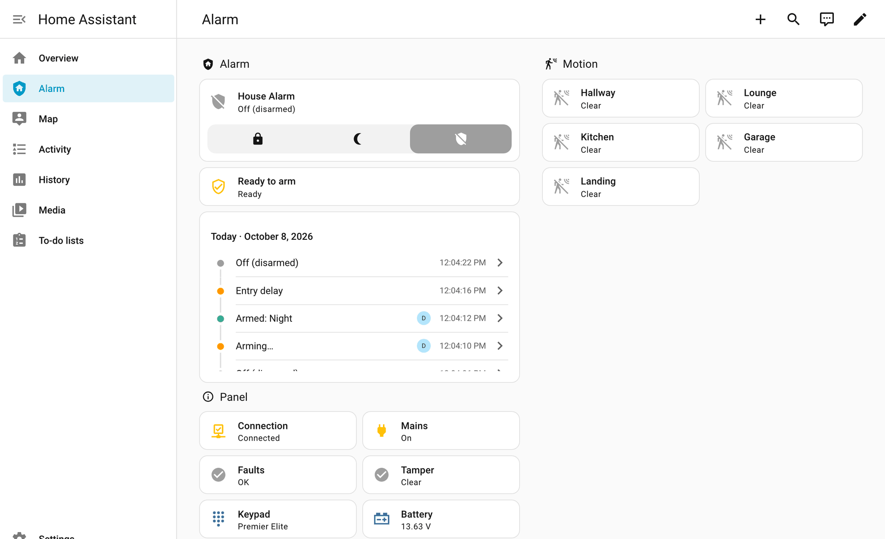
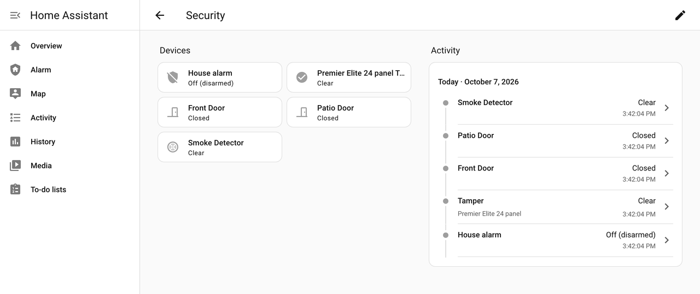
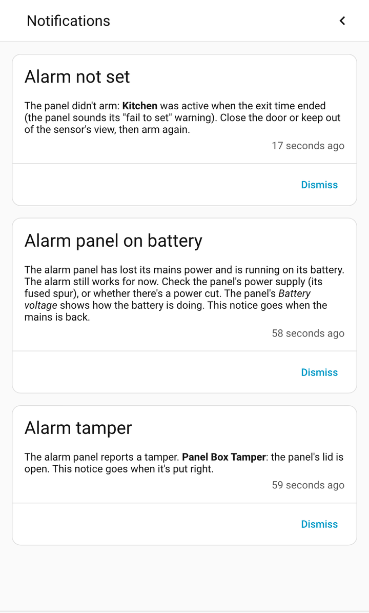
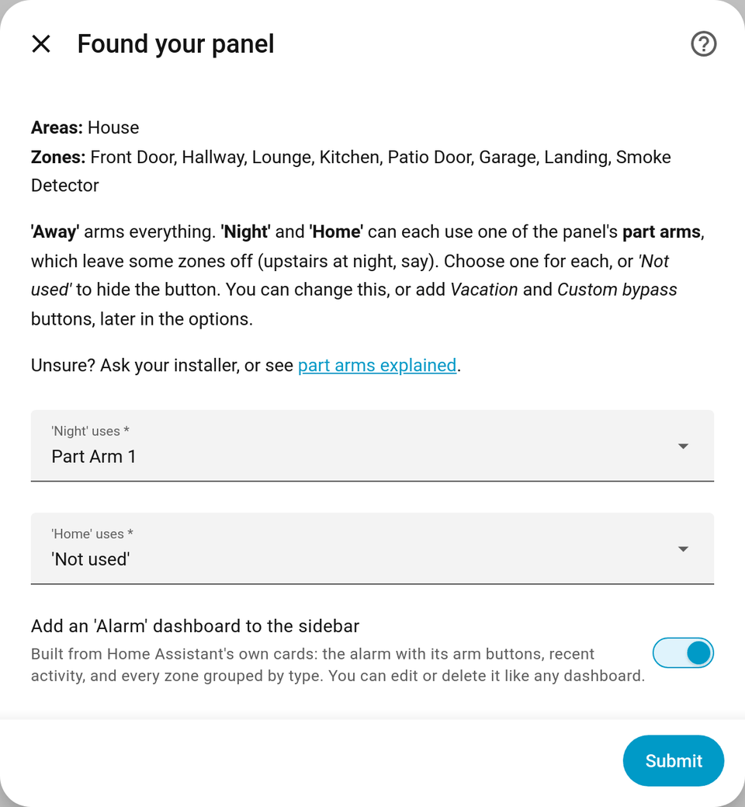

For Texecom Premier Elite alarms
Your Texecom alarm, at home in Home Assistant.
Arm, disarm and see every zone, through the SmartCom you already have.
Free and open source. Unofficial: not made by Texecom.

What you get.
The alarm you use every day, in the same Home Assistant you use for the rest of your home.
-
Arm and disarm
Away, Night and Home (your panel's part arms), or off. See when it's arming, waiting for you to come in, or going off.
-
A sensor for every zone
Named as on your panel: doors, windows, motion, smoke and gas. Changes at the keypad show straight away.
-
Panel health
The connection, mains power, battery and tampers, and what the keypad says.
-
Who did it
Changed by Sam, not User 3, with the names stored in your panel filled in for you.
-
A ready-made dashboard
An Alarm dashboard, built for you at the end of setup from Home Assistant's own cards.
-
Notifications
When the alarm couldn't arm, the panel is on battery, or a tamper opens, saying what to check.
-
One-click automations
Arm when everyone leaves (or ask you first), and tell your phone when the alarm goes off.
Add them -
Ready in minutes
Type your SmartCom's address and the panel's UDL code, and Home Assistant reads your zones. No YAML, no add-on, no MQTT.
-
Apple Home too
Through Home Assistant's built-in HomeKit Bridge: the Home app, Siri and critical alerts.
How to
Feels built in.
The alarm, doors, motion and smoke detectors turn up wherever Home Assistant expects them: the Security summary, each room, the Logbook and History. Zones named after a room you already have go straight into it.

Plain words, not codes.
When the alarm couldn't arm, the panel loses its mains power, or a tamper opens, Home Assistant says what happened and what to check.
The activity list reads the same way: didn't arm: Front Door was active, set off by Kitchen, keypad used by Sam.

Works with the module you already have.
Two ways in. Most people use the first.
-
Texecom Connect
Through your panel's communicator
Over your home network, to the module already on your panel. Everything on this page works this way.
- SmartCom
- ComIP
- ComWiFi
-
Crestron
Through a spare COM port
A COM port set to Crestron System, through a serial-to-network adapter or a USB-serial cable. Zones and arming with fewer extras, and the Texecom app keeps its SmartCom.
What differs
The SmartCom talks to one thing at a time: while Home Assistant is connected, the Texecom app can't. Your alarm, and the app's alarm notifications, carry on as normal.
Tested on Elite 12, 24, 64 and 168. So far.
Each panel on the list links to what was tried on it. Tried it on yours? Every report helps, even if it all just worked.
Up and running in three steps.
-
Add it to Home Assistant
Click Add to Home Assistant, then Download and restart (HACS), or Install (the Marketplace, from Home Assistant 2026.11).
-
Point it at your panel
Add the Texecom integration, choose Texecom Connect, and type your SmartCom's address (from your router's list of devices) and the panel's UDL code.
-
Choose your arm modes
Pick the part arms Night and Home use, keep the Alarm dashboard ticked, and you're done.

You'll need a Premier Elite panel with a SmartCom, ComIP or ComWiFi (or a COM port set to Crestron), the panel's UDL code (its remote-access code), and Home Assistant 2025.7 or newer. With a SmartCom, ComIP or ComWiFi, nothing needs changing on the panel or in the Texecom app.
It does what you ask. Nothing more.
-
Arms only when asked
It arms or disarms your alarm only when you, or an automation you set up, ask it to.
-
Leaves your programming alone
It never changes the panel's programming. It can keep the panel's clock right, and you can switch that off.
-
Keeps your codes private
Keypad codes are never used or stored. The UDL code is kept like any integration's password, and diagnostics leave it out.
It isn't a certified security product or a replacement for your alarm's own keypads, monitoring or app.